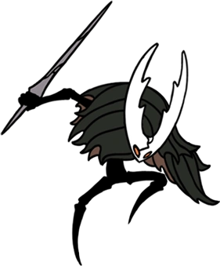

El Caballero
Protagonista del juego. Silencioso, resistente y misterioso.

Hornet
Guardián veloz y letal. Juega un papel clave en el destino de Hallownest.

Hollow Knight
El recipiente destinado a contener la infección. Trágico y poderoso.

Grimm
Líder del temible Troupe Grimm. Elegante y mortal.

Zote el Poderoso
Autoproclamado héroe, aunque suele terminar en problemas.